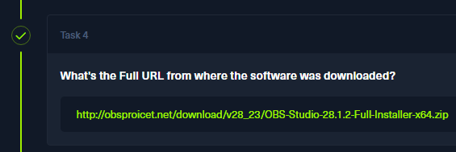

Streamer
Simon Stark is a dev at forela who recently planned to stream some coding sessions with colleagues on which he received appreciation from CEO and other colleagues too.
He unknowingly installed a well known streaming software which he found by google search and was one of the top URL being promoted by google ads.
Unfortunately things took a wrong turn and a security incident took place. Analyze the triaged artifacts provided to find out what happened exactly.
Task 1
I started off by looking into web-related directories of Simon.Stark. This brought me to the C:\Users\Simon.stark\AppData\Local\Microsoft\Windows\WebCache directory. These WebCache files require a special tool to parse and look through.
https://github.com/moaistory/IE10Analyzer
Internet Explorer stores its history in an ESE database. This is the WebCacheV01.dat file inside that directory. I'll use the IE10 analyzer to look through it.
This reveals a downloaded file OBS-Studio-28.1.2-Full-Installer-x64.zip, which will be my answer to question 1
Task 2
In the C directory, there are a few interesting files. Namely, the ones starting with the dollar signs.
The $J file contains records of changes within files. Like filename changes, which is exactly what I'm looking for.
I downloaded MTFECmd.exe from https://ericzimmerman.github.io/#!index.md onto my Windows VM, and I ran a command to parse the $J journal.
.\MFTECmd.exe -f "Streamer\Streamer\Acquisition\C\$Extend\$J" --csv jout.csv
I opened this file in VS Code and searched for any .zip archives.
These entries definitely match. I'll keep the timestamp in mind for task 3.
I have the new filename, but I still need to get its full path. I'll parse the $MFT(Master File Table) next, as it contains information about what files are there and where they are located.
.\MFTECmd.exe -f "Streamer\Streamer\Acquisition\C\$MFT" --csv mft

I will open this file in VS Code, and I'll search for .zip files again.
This is the path, it just needs to be structured properly. It needs a C: at the beginning, and a backslash between Software and Obs.
The final path will be C:\Users\Simon.start\Documents\Streaming Softawre\Obs Streaming Software.zip
Task 3
I already have the answer to this task. It is the timestamp I captured earlier during the $J journal exploration.
Task 4
This is also already known and was found while searching for the full path in task 2.

Task 5
There are many ways to find IPs that are tied to a domain. First, I went to Alienvault and VirusTotal, but there was no IP information.
I then tried running nslookup, whois, and dig, but again, there was nothing.
It is also possible to extract the IPs that the host connected to via parsing Windows event logs (.evtx).
I'm going to focus on the Archive-Microsoft-Windows-DNS-Client%4Operational event log, as it contains DNS queries that the host had made.
I will use another one of Eric Zimmerman's tools for this, EvtxECmd.
.\EvtxECmd.exe -f <FILENAME> --csv dns
Once I had the file open, I searched for the string obs and listed all of the IPs I could find.
There were 3 in total. 13.232.96.186, 142.250.181.68, 34.149.100.209 and the DNS server at 172.17.79.4.
I tried the extracted IPs as answers to task 5, and the answer came after the 1st attempt.
Task 6
To see outgoing connections to the 13.232.96.186 IP, I'll look through the firewall logs located at windows/system32/logfiles/firewall.
I will search for any connections related to this IP, and I'll note down the source ports.
2023-05-05 15:19:39 ALLOW TCP 172.17.79.129 13.232.96.186 49997 80 0 - 0 0 0 - - - SEND
2023-05-05 15:19:42 ALLOW TCP 172.17.79.129 13.232.96.186 50006 80 0 - 0 0 0 - - - SEND
2023-05-05 15:19:42 ALLOW TCP 172.17.79.129 13.232.96.186 50007 80 0 - 0 0 0 - - - SEND
2023-05-05 15:19:45 ALLOW TCP 172.17.79.129 13.232.96.186 50008 80 0 - 0 0 0 - - - SEND
2023-05-05 15:24:17 ALLOW TCP 172.17.79.129 13.232.96.186 50045 80 0 - 0 0 0 - - - SEND
So the highest port, and the answer to this task, should be 50045.
Task 7
Now I'm looking for a SHA-1 hash of the setup file. Going off by the timestamp I got earlier, I will parse the Amcache.hve file.
It contains information about files that have been executed on the system. Obviously, the setup has been run by the user, so the answer will most definitely be here.
I will use yet another tool from Eric Zimmerman, this time it'll be the AmcacheParser.
.\AmcacheParser.exe -f Amcache.hve --csv test
!{amcache](amcache.png)
I'll take the timestamp, and I'll search the output .csv file with it.
2023-05-05 10
There was only one entry for this date, and it correlates with the executable.
I will take the SHA-1 hash as my answer.
Task 8
For this task, I went back to the $J/$MFT files. I searched for events that occurred after the timestamp.
After a bit of scrolling, I found a very suspicious entry.
This file name looks like it was randomized deliberately to evade antivirus software.
The whole path would be:
C:\Users\Simon.stark\Miloyeki ker konoyogi\lat takewode libigax weloj jihi quimodo datex dob cijoyi mawiropo.exe
And that will be my answer to task 8.
Task 9
I opened up my prefetch .csv file and searched for the string takewode.
And following the format of the entries, the highlighted bit will be the prefetch hash.
Task 10
Persistence mechanism... So, in other words, a scheduled task. I'll navigate to the Tasks directory under System32.
This COMSurrogate entry fits the day of the other events. I will input this string as my answer.
Task 11
To find a domain name, I'll go back to the already extracted DNS .evtx log.
However, the amount of fitting records was enormous, and in total there were 406 unique domain names tied to an EventID of 3008, and nearly 34k records overall.
I decided to craft a python script that would parse this .csv and output only domains that fit into my criteria.
import csv
import json
log_filename = '20250712145633_EvtxECmd_Output.csv'
print("Fitting domains:\n")
found_domains = set()
with open(log_filename, 'r', encoding='utf-8') as f:
reader = csv.reader(f)
for i, row in enumerate(reader):
if not row or len(row) < 20:
continue
#Event ID 3008 only
event_id = row[3]
if event_id == '3008':
json_string = row[-1]
try:
data = json.loads(json_string)
event_data_items = data.get("EventData", {}).get("Data")
if isinstance(event_data_items, list):
for item in event_data_items:
if isinstance(item, dict) and item.get("@Name") == "QueryName":
query_name = item.get("#text")
#Checking whether the domain name contains exactly X dot characters
if query_name and query_name.count('.') == 1:
found_domains.add(query_name)
except (json.JSONDecodeError, AttributeError) as e:
#Silently ignore rows that can't be parsed
pass
#Print the list
if not found_domains:
print("No domains matching the criteria were found.")
else:
for domain in sorted(list(found_domains)):
print(domain)
This will output only domains from records where EventID is 3008, and where the domain name has exactly 1 dot character.
The number of dots can be changed easily, but I'll start with 1.
I can see one domain that definitely looks "bogus" and random. Before proceeding, I will try to use it as the answer.
Task 12
This time I'm looking for S3 buckets. These addresses stand out by having s3 and amazonaws in the names. I'll modify my script to search all events and look for mentions of either one of those 2.
This bucket address will be my answer to task 12.
Task 13
I did see this note earlier while searching through the #MFT/$J file dumps, but I did not see any content.
I'll take note of the sequence number (5443) and the sequence number(7). These will be useful in a moment.
The file does not exist in the filesystem dump I was given. If I were given a disk image, I could probably carve it out and recover it entirely.
Having these two numbers, I can run MFTECmd again, with the --de flag to gather more information about this particular entry.
.\MFTECmd.exe -f C:\Users\malware\Desktop\challs\Streamer\Streamer\Acquisition\C\$MFT --de 5443-7
It successfully recovered the contents of the week 1 note. I will use the topic as my answer to task 13.
Task 14
I ran SBECmd.exe against Simon's NTUSER.dat file. Shellbags are a set of registry keys that contain details about a user’s viewed folder.
Essentially, I'll be able to see what was accessed by Simon and whoever triaged the workstation under their account.
The security analyst's name is CyberJunkie.
Task 15
The network path is displayed in the output as well.
\\DESKTOP-887GK2L\Users\CyberJunkie\Desktop\Forela-Triage-Workstation\Acquisiton and Triage tools
Solved!